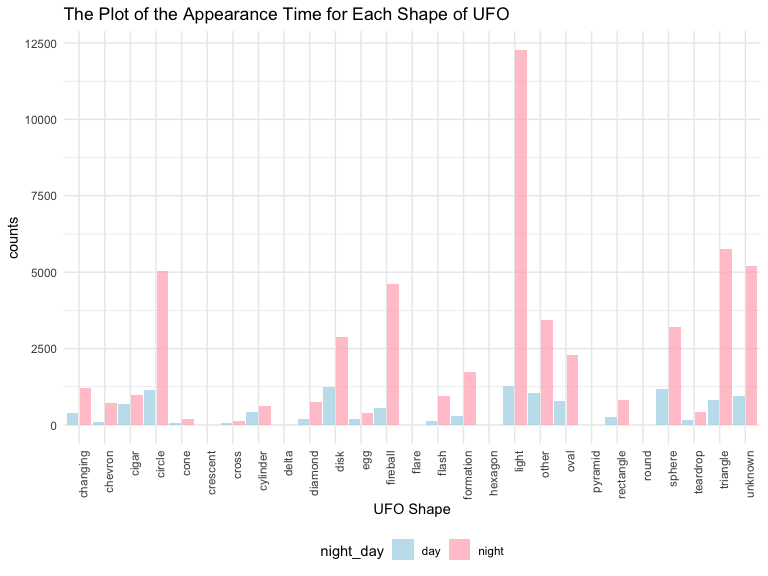
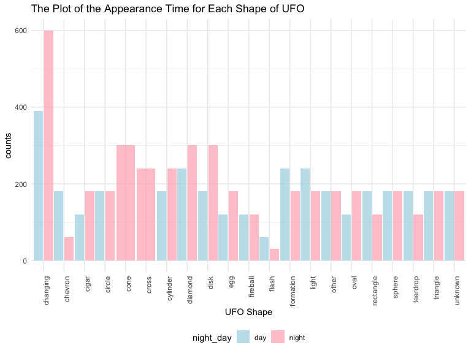
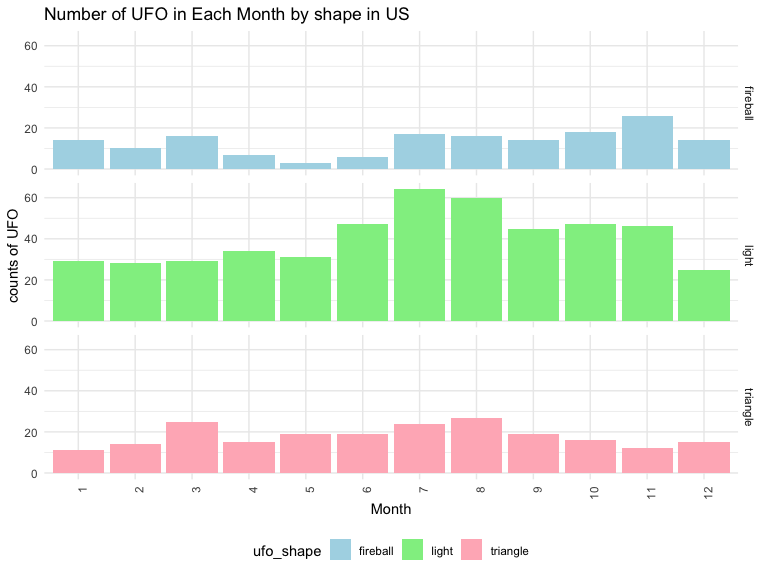
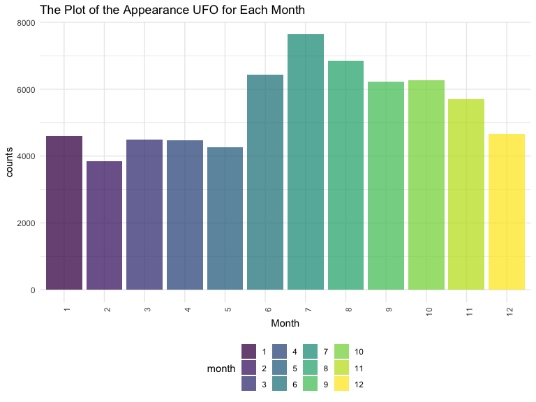

Ran Wang 11/8/2019
ufo_data = readr::read_csv("./data/tidied_data_final.csv")## Parsed with column specification:
## cols(
## latitude = col_double(),
## longitude = col_double(),
## date_time = col_character(),
## city_description = col_character(),
## ufo_shape = col_character(),
## encounter_length = col_double(),
## described_encounter_length = col_character(),
## description = col_character(),
## date_documented = col_character(),
## country = col_character(),
## state = col_character(),
## city = col_character()
## )ufo_day_night_shape =
ufo_data %>%
separate(date_time, into = c( "date","time"), sep = " " ) %>%
separate(date, into = c("month","day","year"), sep = "/") %>%
separate(time, into = c("hour","minute"), sep = ":") %>%
mutate(hour=recode(hour, "00"="24")) %>%
filter(country == "USA") %>%
mutate(year_1 = case_when(year >= 1950 ~ "true",
TRUE ~"false")) %>%
filter(year_1 == "true") %>%
select(-year_1) %>%
mutate(hour = as.numeric(hour)) %>%
mutate(night_day = case_when(18 <= hour & hour <= 24~ "night",
1 <= hour & hour <= 6 ~ "night",
TRUE ~ "day")) %>%
group_by(ufo_shape, night_day) %>%
summarize(count_shape = n()) %>%
ggplot(aes(x = ufo_shape, y = count_shape, group = night_day)) +
geom_col(aes(fill = night_day), alpha = .75, position = position_dodge(1)) +
scale_fill_manual(
values = c("lightblue","lightpink"),
labels = c("day","night")
) +
theme(axis.text.x = element_text(angle = 90, hjust = 1)) +
labs(title = "The Plot of the Appearance Time for Each Shape of UFO",
y = "counts",
x = "UFO Shape")
ufo_day_night_shape
ufo_day_night_length =
ufo_data %>%
separate(date_time, into = c( "date","time"), sep = " " ) %>%
separate(date, into = c("month","day","year"), sep = "/") %>%
separate(time, into = c("hour","minute"), sep = ":") %>%
mutate(hour=recode(hour, "00"="24")) %>%
filter(country == "USA") %>%
mutate(year_1 = case_when(year >= 1950 ~ "true",
TRUE ~"false")) %>%
filter(year_1 == "true") %>%
select(-year_1) %>%
mutate(hour = as.numeric(hour)) %>%
mutate(night_day = case_when(18 <= hour & hour <= 24~ "night",
1 <= hour & hour <= 6 ~ "night",
TRUE ~ "day")) %>%
group_by(ufo_shape, night_day) %>%
summarize(median_length = median(encounter_length),
count = n()) %>%
filter(count > 100)%>%
ggplot(aes(x = ufo_shape, y = median_length, group = night_day)) +
geom_col(aes(fill = night_day), alpha = .75, position = position_dodge(1)) +
scale_fill_manual(
values = c("lightblue","lightpink"),
labels = c("day","night")
) +
theme(axis.text.x = element_text(angle = 90, hjust = 1)) +
labs(title = "The Plot of the Appearance Time for Each Shape of UFO",
y = "counts",
x = "UFO Shape")
ufo_day_night_length
#data_summary <- function(x) {
#m <- mean(x)
# ymin <- m-sd(x)
#ymax <- m+sd(x)
#return(c(y=m,ymin=ymin,ymax=ymax))
#}
ufo_day_night_length =
ufo_data %>%
na.omit(ufo_data) %>%
separate(date_time, into = c( "date","time"), sep = " " ) %>%
separate(date, into = c("month","day","year"), sep = "/") %>%
separate(time, into = c("hour","minute"), sep = ":") %>%
mutate(hour=recode(hour, "00"="24")) %>%
filter(country == "USA") %>%
mutate(year_1 = case_when(year >= 1950 ~ "true",
TRUE ~"false")) %>%
filter(year_1 == "true") %>%
select(-year_1) %>%
mutate(hour = as.numeric(hour)) %>%
mutate(night_day = case_when(19 <= hour & hour <= 24~ "night",
1 <= hour & hour <= 6 ~ "night",
TRUE ~ "day")) %>%
group_by(night_day) %>%
summarize(mean_length_time = mean(encounter_length)) %>%
knitr::kable(digits = 1)
#ggplot(aes(x = night_day, y = encounter_length)) +
#geom_violin(aes(fill = night_day, color = night_day),trim = TRUE, color = "lightblue", alpha = .5, position = position_dodge(1)) +
#show the mean and sd
#stat_summary(mapping = aes(group = night_day),fun.y = mean, position = position_dodge(1), geom = "point", color = "black", size = 4) +
#stat_summary (mapping = aes(group = night_day),fun.data=data_summary,position = position_dodge(1),geom="crossbar", width=0.2,color = "black") +
#scale_y_continuous(breaks = c(0, 1, 2, 3, 4, 5, 25, 55, 85, 5000000)
#)
ufo_day_night_length| night_day | mean_length_time |
|---|---|
| day | 7185.6 |
| night | 5686.9 |
ufo_month_shape =
ufo_data %>%
na.omit(ufo_data) %>%
separate(date_time, into = c( "date","time"), sep = " " ) %>%
separate(date, into = c("month","day","year"), sep = "/") %>%
separate(time, into = c("hour","minute"), sep = ":") %>%
mutate(hour=recode(hour, "00"="24")) %>%
filter(country == "USA") %>%
mutate(year_1 = case_when(year >= 1950 ~ "true",
TRUE ~"false")) %>%
mutate(month = forcats::fct_relevel(month, c("0","1","2","3","4","5","6","7","8","9","10","11","12"))) %>%
filter(year_1 == "true") %>%
select(-year_1) %>%
filter(ufo_shape == "light" |ufo_shape == "triangle"|ufo_shape == "fireball") %>%
group_by(ufo_shape, month) %>%
summarize(count_shape = n()) %>%
ggplot(aes(x = month, y = count_shape, fill = ufo_shape)) +
geom_col() +
facet_grid(ufo_shape~.) +
theme(axis.text.x = element_text(angle = 90, hjust = 1)) +
labs(
title = "Number of UFO in Each Month by shape in US",
x = "Month",
y = "counts of UFO"
) +
scale_fill_manual(values = c("lightblue","lightgreen","lightpink"), labels = c("fireball","light","triangle")
)
ufo_month_shape
ufo_month_counts_plot =
ufo_data %>%
separate(date_time, into = c( "date","time"), sep = " " ) %>%
separate(date, into = c("month","day","year"), sep = "/") %>%
filter(country == "USA") %>%
mutate(year_1 = case_when(year >= 1950 ~ "true",
TRUE ~"false")) %>%
mutate(month = forcats::fct_relevel(month, c("0","1","2","3","4","5","6","7","8","9","10","11","12"))) %>%
filter(year_1 == "true") %>%
select(-year_1) %>%
group_by(month) %>%
summarize(count_month = n()) %>%
ggplot(aes(x = month, y = count_month)) +
geom_col(aes(fill = month), alpha = .75, position = position_dodge(1)) +
#scale_fill_manual(
#values = c("lightblue","lightpink"),
#labels = c("day","night")
#) +
theme(axis.text.x = element_text(angle = 90, hjust = 1)) +
labs(title = "The Plot of the Appearance UFO for Each Month",
y = "counts",
x = "Month")
ufo_month_counts_plot
ufo_month_counts_table =
ufo_data %>%
separate(date_time, into = c( "date","time"), sep = " " ) %>%
separate(date, into = c("month","day","year"), sep = "/") %>%
filter(country == "USA") %>%
mutate(year_1 = case_when(year >= 1950 ~ "true",
TRUE ~"false")) %>%
mutate(month = forcats::fct_relevel(month, c("0","1","2","3","4","5","6","7","8","9","10","11","12"))) %>%
filter(year_1 == "true") %>%
select(-year_1) %>%
group_by(month) %>%
summarize(count_month = n()) %>%
pivot_wider(id_cols = month,
names_from = month,
values_from = count_month)
ufo_month_counts_table## # A tibble: 1 x 12
## `1` `2` `3` `4` `5` `6` `7` `8` `9` `10` `11` `12`
## <int> <int> <int> <int> <int> <int> <int> <int> <int> <int> <int> <int>
## 1 4595 3841 4501 4466 4268 6440 7642 6844 6224 6258 5699 4660ufo_month_counts_table %>%
chisq.test( correct = TRUE)##
## Chi-squared test for given probabilities
##
## data: .
## X-squared = 2980.3, df = 11, p-value < 2.2e-16ufo_2000 =
ufo_data %>%
na.omit(ufo_data) %>%
separate(date_time, into = c( "date","time"), sep = " " ) %>%
separate(date, into = c("month","day","year"), sep = "/") %>%
filter(country == "USA") %>%
mutate(year_1 = case_when(year >= 2000 ~ "true",
TRUE ~"false")) %>%
filter(year_1 == "true") %>%
group_by(year,state) %>%
mutate(count = n()) %>%
ungroup() %>%
select(year,state,count) %>%
distinct() %>%
arrange(year) %>%
pivot_wider(id_cols = state,
names_from = year,
values_from = count)
#fill the NA with 0
clean_ufo_2000 <- ufo_2000
clean_ufo_2000[is.na(clean <- clean_ufo_2000)] <- 0
clean_ufo_2000## # A tibble: 49 x 16
## state `2000` `2001` `2002` `2003` `2004` `2005` `2006` `2007` `2008` `2009`
## <chr> <dbl> <dbl> <dbl> <dbl> <dbl> <dbl> <dbl> <dbl> <dbl> <dbl>
## 1 NY 12 28 21 41 32 27 30 41 19 31
## 2 TX 6 7 2 4 2 4 4 3 4 5
## 3 WA 13 8 3 10 8 8 6 5 3 2
## 4 OR 5 5 2 2 1 2 1 0 0 1
## 5 CT 1 0 1 0 0 1 0 0 1 1
## 6 PA 4 3 0 2 2 1 3 1 4 1
## 7 OK 1 3 0 1 0 2 0 0 1 2
## 8 CA 18 8 14 13 11 9 13 10 16 9
## 9 FL 7 5 2 3 5 7 3 3 2 1
## 10 OH 6 0 4 1 3 2 3 1 0 1
## # … with 39 more rows, and 5 more variables: `2010` <dbl>, `2011` <dbl>,
## # `2012` <dbl>, `2013` <dbl>, `2014` <dbl>clean_ufo_2000## # A tibble: 49 x 16
## state `2000` `2001` `2002` `2003` `2004` `2005` `2006` `2007` `2008` `2009`
## <chr> <dbl> <dbl> <dbl> <dbl> <dbl> <dbl> <dbl> <dbl> <dbl> <dbl>
## 1 NY 12 28 21 41 32 27 30 41 19 31
## 2 TX 6 7 2 4 2 4 4 3 4 5
## 3 WA 13 8 3 10 8 8 6 5 3 2
## 4 OR 5 5 2 2 1 2 1 0 0 1
## 5 CT 1 0 1 0 0 1 0 0 1 1
## 6 PA 4 3 0 2 2 1 3 1 4 1
## 7 OK 1 3 0 1 0 2 0 0 1 2
## 8 CA 18 8 14 13 11 9 13 10 16 9
## 9 FL 7 5 2 3 5 7 3 3 2 1
## 10 OH 6 0 4 1 3 2 3 1 0 1
## # … with 39 more rows, and 5 more variables: `2010` <dbl>, `2011` <dbl>,
## # `2012` <dbl>, `2013` <dbl>, `2014` <dbl>clean_ufo_2000 %>%
select(-state) %>%
chisq.test(correct = TRUE)##
## Pearson's Chi-squared test
##
## data: .
## X-squared = 717.27, df = 672, p-value = 0.11ufo_shape = ufo_data %>% na.omit(ufo_data) %>% separate(date_time, into = c( “date”,“time”), sep = " " ) %>% separate(date, into = c(“month”,“day”,“year”), sep = “/”) %>% filter(country == “us”) %>% filter(ufo_shape == “circle”|ufo_shape == “triangle”|ufo_shape == “light”) %>% group_by(state) %>% count(ufo_shape) %>% ungroup() %>% group_by(state) %>% mutate(total=sum(n)) %>% mutate( ufo_shape = factor(ufo_shape), ufo_shape = forcats::fct_reorder(ufo_shape, n))
time_month = ufo_data %>% na.omit(ufo_data) %>% separate(date_time, into = c( “date”,“time”), sep = " " ) %>% separate( date, into = c(“month”,“day”,“year”), sep = “/”) %>% filter(country == “us”) %>% separate(time, into = c(“hour”, “minute”), sep = “:”) %>% mutate(hour = recode(hour, “24” = “00”)) %>% filter(hour == 18| hour == 19 | hour == 20| hour == 21| hour == 22| hour == 23| hour == 00) %>% mutate(hour = paste0(hour, “:00-”, hour, “:59”)) %>% select(-minute) %>% mutate(month = month.name\[as.numeric(month)\]) %>% group_by(hour, month) %>% summarize(n = n()) %>% pivot_wider(id_cols = month, names_from = hour, values_from = n)
time_month time_month %>% select(-month) %>% chisq.test( correct = TRUE)
group_by(night_day) %>% mutate(count = n()) %>% ungroup() %>%
select(year,state,count) %>% distinct() %>% arrange(year) %>% pivot_wider(id_cols = state, names_from = year, values_from = count)
#fill the NA with 0 clean_ufo <- ufo clean_ufo\[is.na(clean \<- clean\_ufo)\] <- 0
clean_ufo clean_ufo %>% select(-state) %>% chisq.test( correct = TRUE)